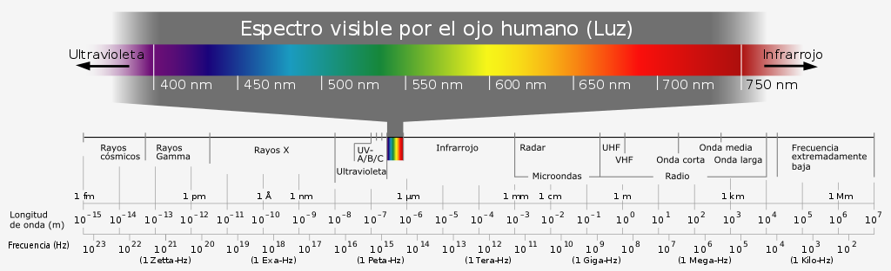

Las ventajas del LiFi no son pocas, pero podemos resumirlas en tres: velocidad, interferencias y seguridad. Tampoco está exenta de desventajas, pero las abordaremos en el siguiente apartado. Empecemos por la velocidad. Ya hemos visto que la velocidad que los sistemas LiFi pueden alcanzar no es baja. La primera prueba dejó ver 10 Mbps y se esperaba que la velocidad máxima a conseguir con esta tecnología fuese de 500 Mbps. A la vista está que no. Tras su salida de los laboratorios (donde se consiguió una velocidad de 224 Gbps), el LiFi consiguió una velocidad de 1 Gbps. Ahora tenemos fibras de 600 Mbps y de hasta 1 Gbps, pero por aquellos entonces hablábamos de 100 veces la velocidad media del WiFi. Posteriormente, Joanne Oh, de la Universidad de Eindhoven, colocó una serie de antenas que transmitían rayos infrarrojos en un laboratorio, lo que le permitió conseguir los 42,8 Gbps a una distancia de 2,5 metros. Las ondas tenía una longitud de 1.500 nanómetros, por lo que eran imperceptibles para el ojo humano. Además, se podrían colocar varias antenas con diferentes longitudes de onda y ángulos para evitar posibles interferencias.
